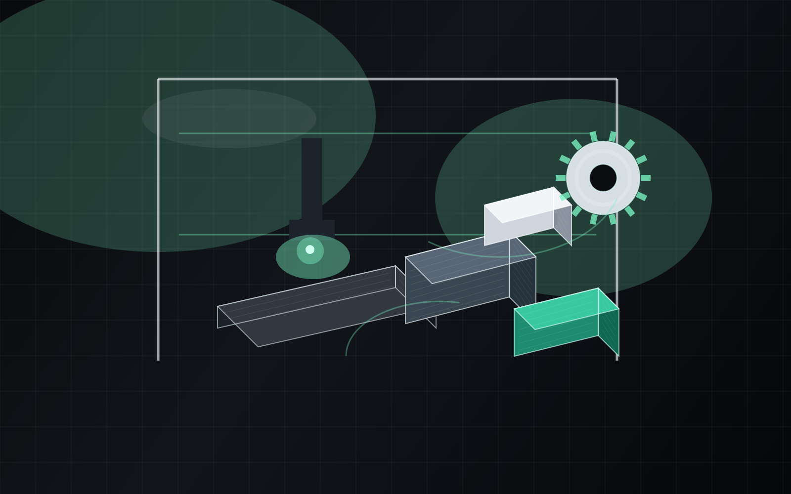

Rapid prototypes
Iterate on fit, geometry, and hardware clearances without losing time to traditional fabrication lead times.
Prototype to production-ready parts
Precision prints. Recycled materials. Built to perform.
MaterialMatrix delivers durable components for fixtures, enclosures, repair jobs, and short-run manufacturing support with a process tuned for reliable fit and repeatable finish.

Capabilities
The shop is set up around accuracy, print orientation, and material selection so every part is tuned for the job it has to do.
Iterate on fit, geometry, and hardware clearances without losing time to traditional fabrication lead times.
Durable prints for machine guards, custom mounts, enclosures, replacement parts, and utility fixtures.
Match each job to the right balance of stiffness, impact resistance, temperature performance, and surface finish.
Why MaterialMatrix
Every job starts with a quick design-for-printability review to catch wall thickness issues, unsupported spans, and assembly risks before material ever hits the bed.

Workflow
A lightweight process keeps projects moving without adding extra overhead for straightforward print jobs.
Send your model, dimensions, quantity, and deadline through the request form.
Material, orientation, and print strategy are tuned to the job before production begins.
Parts are produced, inspected, and cleaned up for practical handoff or assembly.
Need another run later on? Saved settings make reorders easier and more consistent.
Start a build